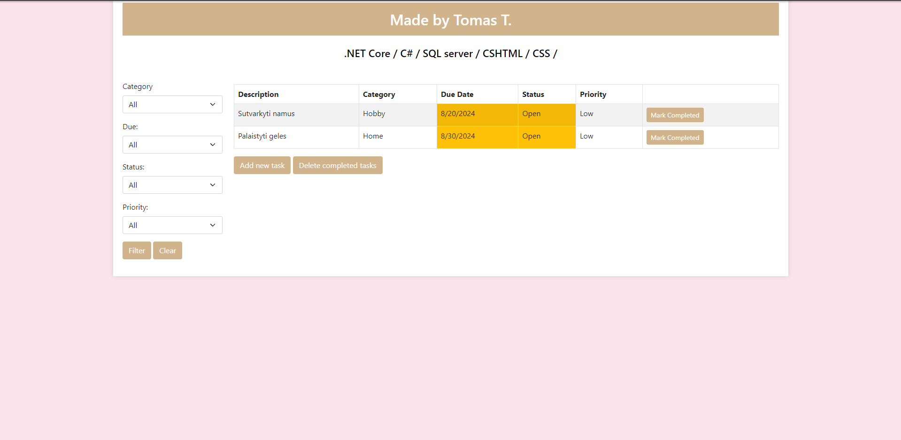

To Do Web Application
The To Do Web Application was designed to provide a simple and effective way for users to manage their tasks. Developed using C#, SQL, and ASP.NET Core, the application allows users to effortlessly add, edit, or delete tasks in real-time. The user interface is clean and intuitive, making task management straightforward for both individuals and teams. With built-in database integration, all tasks are securely stored, ensuring persistence across sessions. The application is optimized for performance and scalability, offering a responsive experience across multiple devices.
Key features include:
- Task creation, editing, and deletion functionality
- Secure data storage using SQL for persistent task management
- Developed with ASP.NET Core for high performance and scalability
- User-friendly interface with responsive design for seamless usage on all devices

